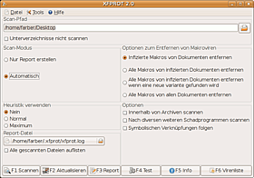

F-PROT
Archivierte Anleitung
Dieser Artikel wurde archiviert, da er - oder Teile daraus - nur noch unter einer älteren Ubuntu-Version nutzbar ist. Diese Anleitung wird vom Wiki-Team weder auf Richtigkeit überprüft noch anderweitig gepflegt. Zusätzlich wurde der Artikel für weitere Änderungen gesperrt.
Zum Verständnis dieses Artikels sind folgende Seiten hilfreich:
F-PROT  ist ein kommerzieller Kommandozeilen-Virenscanner, der die gleiche Funktionalität bietet wie die wesentlich aufwändiger gestaltete Windows-Version. Die Version für Linux Workstations ist für den privaten Gebrauch kostenlos. Unter der Bezeichnung Xfprot steht ein freies, übersichtlich gestaltetes grafisches Frontend für F-PROT zur Verfügung, das die Bedienung wesentlich vereinfacht.
ist ein kommerzieller Kommandozeilen-Virenscanner, der die gleiche Funktionalität bietet wie die wesentlich aufwändiger gestaltete Windows-Version. Die Version für Linux Workstations ist für den privaten Gebrauch kostenlos. Unter der Bezeichnung Xfprot steht ein freies, übersichtlich gestaltetes grafisches Frontend für F-PROT zur Verfügung, das die Bedienung wesentlich vereinfacht.
Viren und vergleichbare Schadprogramme haben in Linux keineswegs die gleiche Bedeutung wie in manchen anderen Betriebssystemen, da sie hier direkt keinen Schaden anrichten. Da Linux-Rechner aber oftmals mit Rechnern anderer Betriebssysteme kommunizieren oder Daten austauschen, ist es wichtig, zum Schutz der anderen auch die Linux-Rechner frei von Viren und Schadprogrammen zu halten. Ganz besonders gilt dies für Dual-Boot-Systeme mit gemeinsam genutzten Partitionen und für heterogene Netzwerke mit verschiedenen beteiligten Betriebssystemen.
Der Virenscanner F-PROT für Linux ist einfach zu installieren und zu bedienen und bietet Schutz gegen Viren, Makroviren und andere Arten von Schadprogrammen ("Malware") einschließlich Trojaner.
Ergänzend zur hier beschriebenen für den privaten Gebrauch kostenlosen Version für Linux Workstations werden noch erweiterte Versionen für Linux Fileserver und Linux Mailserver kostenpflichtig angeboten.
Eine freie Alternative zu F-PROT ist ClamAV.
Hinweis:
Installation¶
F-PROT¶
F-PROT muss von der Herstellerseite oder von einem der dort angegebenen Mirrors heruntergeladen werden. Das Paket steht als Tarball (.tar-Archiv) ausschließlich für 32-bit-Systeme zur Verfügung.
Hinweis!
Fremdpakete können das System gefährden.
Erstinstallation¶
Man lädt den Tarball von der Download-Seite
 herunter und entpackt ihn in ein Verzeichnis eigener Wahl[1]. Empfohlen wird /opt. Dabei wird dort der Ordner opt/f-prot eingerichtet. In diesem befindet sich unter den anderen Installations-Dateien auch ein fertiges Installations-Skript install-f-prot.pl.
herunter und entpackt ihn in ein Verzeichnis eigener Wahl[1]. Empfohlen wird /opt. Dabei wird dort der Ordner opt/f-prot eingerichtet. In diesem befindet sich unter den anderen Installations-Dateien auch ein fertiges Installations-Skript install-f-prot.pl.Man wechselt nun in diesen Ordner und ruft das Installations-Skript mit Root-Rechten[6] auf. Hierzu gibt man in einem Terminal [4] folgende Zeilen ein
cd /opt/f-prot sudo ./install-f-prot.pl
Während der Installationen werden noch einige Fragen gestellt, die man im Normalfall einfach mit ⏎ beantworten kann
Aus Gründen der Sicherheit empfiehlt es sich noch, mit folgender Zeile root als Eigentümer von allen installierten Dateien festzulegen:
sudo chown -R root:root /opt/f-prot
Damit ist die Installation im Ordner /opt/f-prot einschließlich der nötigen Links fertig.
Upgrade¶
Ist noch eine ältere Version 4 von F-PROT installiert, so sollte diese unbedingt durch die aktuelle Version ersetzt werden, da die Signatur-Dateien nur noch ab Version 6 aktualisiert werden können.
Hierzu entfernt man zunächst die alte Version. Wurde diese über ein DEB-Paket installiert, deinstalliert man sie mit der Paketverwaltung. Sonst gibt man in einem Terminal[4] folgende Befehlszeile ein (die früheren Versionen von F-PROT wurden nicht in /opt/f-prot, sondern in /usr/local/f-prot installiert):
sudo rm -rf /usr/local/f-prot
Anschließend verfährt man genau wie bei einer Neuinstallation.
Xfprot¶
Das Frontend Xfprot steht als Tarball xfprot-2.4.tar.gz bereit. Leider wird Xfprot nicht mehr weiter entwickelt. Außerdem werden F-Prot-Versionen neuer als 6.3 nicht mehr unterstützt.
Hinweis!
Fremdpakete können das System gefährden.
Nach der Installation findet man einen Eintrag für Xfprot im GNOME-Hauptmenü unter
"Anwendungen -> Zubehör -> Xfprot"
Anwendung¶
Kommandozeilen-Version¶
Scannen¶
Das Scannen wird durch folgende Befehlszeile in einem Terminal[4] eingeleitet:
# allgemein: fpscan [Optionen] Ziel # Beispiel: fpscan --verbose=0 /home/farber # oder: fpscan -v 0 /home/farber fpscan
Für einige Optionen ist neben der Langform (hier: --verbose=0) auch eine Kurzform (hier: -v 0) zulässig.
Eine Übersicht über die möglichen Optionen bietet die Manpage oder folgende Befehlszeile:
fpscan -h
Nach dem Scannen erhält man im Terminal eine Ausgabe folgender Art:
fpscan /media/Daten/Texte
F-PROT Antivirus version 6.2.1.4252 (built: 2008-04-28T16-44-10)
FRISK Software International (C) Copyright 1989-2007
Engine version: 4.4.4.56
Virus signatures: 2009010917407654ebf9738f46631f77ab2a18af331b
(/usr/local/f-prot/antivir.def)
Scanning: -
Results:
Files: 1519
Skipped files: 0
MBR/boot sectors checked: 0
Objects scanned: 5608
Infected objects: 0
Files with errors: 0
Disinfected: 0
Running time: 00:27Update¶
Ein Virenscanner bietet nur dann Sicherheit, wenn die Signatur-Dateien regelmäßig aktualisiert werden. Da hierfür Root-Rechte nötig sind, lautet die entsprechende Kommandozeile:
sudo /opt/f-prot/fpupdate
Erfolgt danach keine Anzeige, so sind die Dateien auf dem aktuellen Stand.
Damit die Aktualisierung in regelmäßigen Abständen automatisch erfolgt, richtet F-PROT bei der Installation in der Datei /etc/crontab einen Cronjob ein. Wie dieser mittels der Datei /etc/crontab verändert oder gelöscht werden kann, findet man im Cron-Artikel.
Hinweis:
Die einfache Version von F-PROT für Linux Workstations kann keinen Dämon einrichten, der E-Mails oder andere Dateien beim Öffnen automatisch nach Viren und Schadprogrammen überprüft.

Xfprot¶
Konfiguration¶
Xfprot ist ein grafisches Frontend für F-PROT, mit dem sich auch die wichtigsten Parameter einstellen lassen.
Parameter¶
Die Parameter sind in Gruppen eingeteilt:
| Parameter-Gruppe | Beschreibung |
| "Scan-Modus" | Entscheidet, ob nur ein Report erstellt wird oder ob die Infektionen auch automatisch bereinigt werden sollen |
| "Heuristik verwenden" | Heuristik bezeichnet ein Verfahren, auch nach allgemeinen Merkmalen zu suchen, um unbekannte Viren zu erkennen. Dadurch wird die Sicherheit, aber auch die Wahrscheinlichkeit von Fehldiagnosen erhöht. Heuristik verlangsamt den Scanvorgang wesentlich |
| "Optionen zum Entfernen von Makroviren" | Nur im Scan-Modus "Automatisch" vorhanden |
| "Optionen" | Die weiteren Optionen erklären sich selbst |
Dann kann noch der Scan-Pfad (zu scannendes Verzeichnis) und der Pfad zur Report-Datei (üblicherweise ~/.xfprot/xfprot.log) eingegeben werden.
Hinweis:
Die sehr nützliche Option --exclude (einzelne Verzeichnisse vom Scannen ausschließen) ist bislang leider nur über die Kommandozeile erreichbar.
Operationen¶
Die Operationen werden durch Auswahlfelder am unteren Fensterrand oder durch Funktionstasten F1 ... F6 ausgewählt. Für die Anzeige des Ergebnisses emuliert Xfprot in einem eigenen Fenster ein Terminal.
| Operationen | ||
| Taste | Option | Beschreibung |
| F1 | Scannen | Der eigentliche Scanvorgang |
| F2 | Aktualisieren | Wird normalerweise von einem Cronjob automatisch durchgeführt |
| F3 | Report | Letzten Report nochmal anzeigen |
| F4 | Test | Hier wird mit dem Pseudo-Virus "EICAR" eine Virus-Infektion simuliert. Wird diese entdeckt, zeigt dies nur, dass F-PROT funktioniert |
| F5 | Info | Zeigt die verwendete Version von F-PROT und die Kennung der Signatur-Datei an |
| F6 | Virenliste | Gibt eine Liste der Viren und Schadprogramme aus, die auch ohne Heuristik erkannt werden |
Netzwerk¶
Mit F-PROT werden automatisch alle Dateien mitgescannt, die über ein Netzwerk in den zu scannenden Bereich lokal eingebunden (gemountet) sind. Dabei spielt es keine Rolle, welches Netzwerk-Protokoll (NFS oder Samba/cifs) verwendet wird. Dies bringt Vorteile, aber eventuell auch Nachteile mit sich:
Mit F-PROT lassen sich so auch Freigaben z.B. auf Windows-Rechnern von außen scannen
Das Scannen über ein Netzwerk kann - vor allem mit Heuristik - sehr lange dauern
Wenn unbeabsichtigt Netzwerk-Freigaben mitgescannt werden, kann dies das Netzwerk sehr belasten.
Deshalb sollte man bei Rechnern, die in ein Netzwerk eingebunden sind, vor jedem Scan-Vorgang überprüfen, ob irgendwelche entfernte Freigaben in dem zu scannenden Bereich eingebunden sind. Dabei sollte man auch versteckte Dateien wie z.B. ~/.gvfs oder ~/.smb im Heimverzeichnis nicht vergessen.
Achtung!
Unbeabsichtigtes Scannen eingebundener Netzwerk-Freigaben kann den Scan-Vorgang sehr verzögern und das Netzwerk unnötigerweise sehr belasten!
Dokumentation¶
Eine ausführliche Dokumentation findet sich auf f-prot.com . Die Manpages erhält man durch Eingabe folgender Befehlszeilen in einem Terminal:
man fpscan man fpupdate
Deinstallation¶
Zur Deinstallation von F-PROT löscht man alle Dateien im Verzeichnis /opt/f-prot mit Root-Rechten:
sudo rm -rf /opt/f-prot
Hat man von der Möglichkeit eines regelmäßigen automatischen Updates Gebrauch gemacht (Standard bei der Installation), so muss noch der Cronjob entfernt werden. Hierzu editiert[5] man die Datei /etc/crontab mit Root-Rechten, dort findet man folgenden Eintrag:
# This entry was added by the `install-f-prot.pl' script in the F-PROT # package to update the antivir.def file in # /usr/local/f-prot/antivir.def 21 * * * * root /usr/local/f-prot/fpupdate > /dev/null
Dieser ist zu löschen.
Die bei der Installation automatisch angelegten symbolischen Verknüpfungen sind noch als wirkungslose "tote Links" vorhanden. Wenn dies stört, können sie noch mit folgender Befehlszeile beseitigt werden:
sudo find /usr/local/ -lname '/opt/f-prot/*' -delete
Probleme und Lösungen¶
Xfprot kann die Version von F-Prot nicht erkennen¶
Die aktuelle Version Xfprot 2.4 erkennt die aktuelle Version 6.5.x von F-Prot nicht und bricht deshalb ab.
Um dieses Problem zu beheben, muss entweder eine ältere Version 6.3.x von F-Prot installiert werden, oder Xfprot muss mit einigen Änderungen im Quellcode neu kompiliert werden. Einzelheiten siehe im Forum.
 Programmübersicht
Programmübersicht- Erstellt mit Inyoka
-
 2004 – 2017 ubuntuusers.de • Einige Rechte vorbehalten
2004 – 2017 ubuntuusers.de • Einige Rechte vorbehalten
Lizenz • Kontakt • Datenschutz • Impressum • Serverstatus -
Serverhousing gespendet von